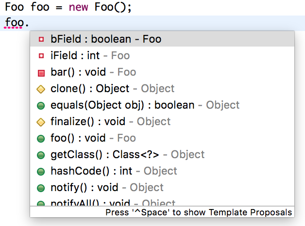
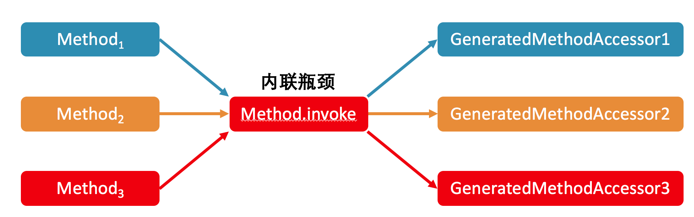

- 00 开篇词 为什么我们要学习Java虚拟机？.md.html
- 01 Java代码是怎么运行的？.md.html
- 02 Java的基本类型.md.html
- 03 Java虚拟机是如何加载Java类的.md.html
- 04 JVM是如何执行方法调用的？（上）.md.html
- 05 JVM是如何执行方法调用的？（下）.md.html
- 06 JVM是如何处理异常的？.md.html
- 07 JVM是如何实现反射的？.md.html
- 08 JVM是怎么实现invokedynamic的？（上）.md.html
- 09 JVM是怎么实现invokedynamic的？（下）.md.html
- 10 Java对象的内存布局.md.html
- 11 垃圾回收（上）.md.html
- 12 垃圾回收（下）.md.html
- 13 Java内存模型.md.html
- 14 Java虚拟机是怎么实现synchronized的？.md.html
- 15 Java语法糖与Java编译器.md.html
- 16 即时编译（上）.md.html
- 17 即时编译（下）.md.html
- 18 即时编译器的中间表达形式.md.html
- 19 Java字节码（基础篇）.md.html
- 20 方法内联（上）.md.html
- 21 方法内联（下）.md.html
- 22 HotSpot虚拟机的intrinsic.md.html
- 23 逃逸分析.md.html
- 24 字段访问相关优化.md.html
- 25 循环优化.md.html
- 26 向量化.md.html
- 27 注解处理器.md.html
- 28 基准测试框架JMH（上）.md.html
- 29 基准测试框架JMH（下）.md.html
- 30 Java虚拟机的监控及诊断工具（命令行篇）.md.html
- 31 Java虚拟机的监控及诊断工具（GUI篇）.md.html
- 32 JNI的运行机制.md.html
- 33 Java Agent与字节码注入.md.html
- 34 Graal：用Java编译Java.md.html
- 35 Truffle：语言实现框架.md.html
- 36 SubstrateVM：AOT编译框架.md.html
- 尾声丨道阻且长，努力加餐.html.md.html
- 工具篇 常用工具介绍.md.html
07 JVM是如何实现反射的？
今天我们来聊聊 Java 里的反射机制。
反射是 Java 语言中一个相当重要的特性，它允许正在运行的 Java 程序观测，甚至是修改程序的动态行为。
举例来说，我们可以通过 Class 对象枚举该类中的所有方法，我们还可以通过 Method.setAccessible（位于 java.lang.reflect 包，该方法继承自 AccessibleObject）绕过 Java 语言的访问权限，在私有方法所在类之外的地方调用该方法。
反射在 Java 中的应用十分广泛。开发人员日常接触到的 Java 集成开发环境（IDE）便运用了这一功能：每当我们敲入点号时，IDE 便会根据点号前的内容，动态展示可以访问的字段或者方法。
另一个日常应用则是 Java 调试器，它能够在调试过程中枚举某一对象所有字段的值。

（图中 eclipse 的自动提示使用了反射）
在 Web 开发中，我们经常能够接触到各种可配置的通用框架。为了保证框架的可扩展性，它们往往借助 Java 的反射机制，根据配置文件来加载不同的类。举例来说，Spring 框架的依赖反转（IoC），便是依赖于反射机制。
然而，我相信不少开发人员都嫌弃反射机制比较慢。甚至是甲骨文关于反射的教学网页 [1]，也强调了反射性能开销大的缺点。
今天我们便来了解一下反射的实现机制，以及它性能糟糕的原因。如果你对反射 API 不是特别熟悉的话，你可以查阅我放在文稿末尾的附录。
反射调用的实现
首先，我们来看看方法的反射调用，也就是 Method.invoke，是怎么实现的。
public final class Method extends Executable {
...
public Object invoke(Object obj, Object... args) throws ... {
... // 权限检查
MethodAccessor ma = methodAccessor;
if (ma == null) {
ma = acquireMethodAccessor();
}
return ma.invoke(obj, args);
}
}
如果你查阅 Method.invoke 的源代码，那么你会发现，它实际上委派给 MethodAccessor 来处理。MethodAccessor 是一个接口，它有两个已有的具体实现：一个通过本地方法来实现反射调用，另一个则使用了委派模式。为了方便记忆，我便用“本地实现”和“委派实现”来指代这两者。
每个 Method 实例的第一次反射调用都会生成一个委派实现，它所委派的具体实现便是一个本地实现。本地实现非常容易理解。当进入了 Java 虚拟机内部之后，我们便拥有了 Method 实例所指向方法的具体地址。这时候，反射调用无非就是将传入的参数准备好，然后调用进入目标方法。
// v0 版本
import java.lang.reflect.Method;
public class Test {
public static void target(int i) {
new Exception("#" + i).printStackTrace();
}
public static void main(String[] args) throws Exception {
Class<?> klass = Class.forName("Test");
Method method = klass.getMethod("target", int.class);
method.invoke(null, 0);
}
}
# 不同版本的输出略有不同，这里我使用了 Java 10。
$ java Test
java.lang.Exception: #0
at Test.target(Test.java:5)
at java.base/jdk.internal.reflect.NativeMethodAccessorImpl .invoke0(Native Method)
a t java.base/jdk.internal.reflect.NativeMethodAccessorImpl. .invoke(NativeMethodAccessorImpl.java:62)
t java.base/jdk.internal.reflect.DelegatingMethodAccessorImpl.i .invoke(DelegatingMethodAccessorImpl.java:43)
java.base/java.lang.reflect.Method.invoke(Method.java:564)
t Test.main(Test.java:131
为了方便理解，我们可以打印一下反射调用到目标方法时的栈轨迹。在上面的 v0 版本代码中，我们获取了一个指向 Test.target 方法的 Method 对象，并且用它来进行反射调用。在 Test.target 中，我会打印出栈轨迹。
可以看到，反射调用先是调用了 Method.invoke，然后进入委派实现（DelegatingMethodAccessorImpl），再然后进入本地实现（NativeMethodAccessorImpl），最后到达目标方法。
这里你可能会疑问，为什么反射调用还要采取委派实现作为中间层？直接交给本地实现不可以么？
其实，Java 的反射调用机制还设立了另一种动态生成字节码的实现（下称动态实现），直接使用 invoke 指令来调用目标方法。之所以采用委派实现，便是为了能够在本地实现以及动态实现中切换。
// 动态实现的伪代码，这里只列举了关键的调用逻辑，其实它还包括调用者检测、参数检测的字节码。
package jdk.internal.reflect;
public class GeneratedMethodAccessor1 extends ... {
@Overrides
public Object invoke(Object obj, Object[] args) throws ... {
Test.target((int) args[0]);
return null;
}
}
动态实现和本地实现相比，其运行效率要快上 20 倍 [2] 。这是因为动态实现无需经过 Java 到 C++ 再到 Java 的切换，但由于生成字节码十分耗时，仅调用一次的话，反而是本地实现要快上 3 到 4 倍 [3]。
考虑到许多反射调用仅会执行一次，Java 虚拟机设置了一个阈值 15（可以通过 -Dsun.reflect.inflationThreshold= 来调整），当某个反射调用的调用次数在 15 之下时，采用本地实现；当达到 15 时，便开始动态生成字节码，并将委派实现的委派对象切换至动态实现，这个过程我们称之为 Inflation。
为了观察这个过程，我将刚才的例子更改为下面的 v1 版本。它会将反射调用循环 20 次。
// v1 版本
import java.lang.reflect.Method;
public class Test {
public static void target(int i) {
new Exception("#" + i).printStackTrace();
}
public static void main(String[] args) throws Exception {
Class<?> klass = Class.forName("Test");
Method method = klass.getMethod("target", int.class);
for (int i = 0; i < 20; i++) {
method.invoke(null, i);
}
}
}
# 使用 -verbose:class 打印加载的类
$ java -verbose:class Test
...
java.lang.Exception: #14
at Test.target(Test.java:5)
at java.base/jdk.internal.reflect.NativeMethodAccessorImpl .invoke0(Native Method)
at java.base/jdk.internal.reflect.NativeMethodAccessorImpl .invoke(NativeMethodAccessorImpl.java:62)
at java.base/jdk.internal.reflect.DelegatingMethodAccessorImpl .invoke(DelegatingMethodAccessorImpl.java:43)
at java.base/java.lang.reflect.Method.invoke(Method.java:564)
at Test.main(Test.java:12)
[0.158s][info][class,load] ...
...
[0.160s][info][class,load] jdk.internal.reflect.GeneratedMethodAccessor1 source: __JVM_DefineClass__
java.lang.Exception: #15
at Test.target(Test.java:5)
at java.base/jdk.internal.reflect.NativeMethodAccessorImpl .invoke0(Native Method)
at java.base/jdk.internal.reflect.NativeMethodAccessorImpl .invoke(NativeMethodAccessorImpl.java:62)
at java.base/jdk.internal.reflect.DelegatingMethodAccessorImpl .invoke(DelegatingMethodAccessorImpl.java:43)
at java.base/java.lang.reflect.Method.invoke(Method.java:564)
at Test.main(Test.java:12)
java.lang.Exception: #16
at Test.target(Test.java:5)
at jdk.internal.reflect.GeneratedMethodAccessor1 .invoke(Unknown Source)
at java.base/jdk.internal.reflect.DelegatingMethodAccessorImpl .invoke(DelegatingMethodAccessorImpl.java:43)
at java.base/java.lang.reflect.Method.invoke(Method.java:564)
at Test.main(Test.java:12)
...
可以看到，在第 15 次（从 0 开始数）反射调用时，我们便触发了动态实现的生成。这时候，Java 虚拟机额外加载了不少类。其中，最重要的当属 GeneratedMethodAccessor1（第 30 行）。并且，从第 16 次反射调用开始，我们便切换至这个刚刚生成的动态实现（第 40 行）。
反射调用的 Inflation 机制是可以通过参数（-Dsun.reflect.noInflation=true）来关闭的。这样一来，在反射调用一开始便会直接生成动态实现，而不会使用委派实现或者本地实现。
反射调用的开销
下面，我们便来拆解反射调用的性能开销。
在刚才的例子中，我们先后进行了 Class.forName，Class.getMethod 以及 Method.invoke 三个操作。其中，Class.forName 会调用本地方法，Class.getMethod 则会遍历该类的公有方法。如果没有匹配到，它还将遍历父类的公有方法。可想而知，这两个操作都非常费时。
值得注意的是，以 getMethod 为代表的查找方法操作，会返回查找得到结果的一份拷贝。因此，我们应当避免在热点代码中使用返回 Method 数组的 getMethods 或者 getDeclaredMethods 方法，以减少不必要的堆空间消耗。
在实践中，我们往往会在应用程序中缓存 Class.forName 和 Class.getMethod 的结果。因此，下面我就只关注反射调用本身的性能开销。
为了比较直接调用和反射调用的性能差距，我将前面的例子改为下面的 v2 版本。它会将反射调用循环二十亿次。此外，它还将记录下每跑一亿次的时间。
我将取最后五个记录的平均值，作为预热后的峰值性能。（注：这种性能评估方式并不严谨，我会在专栏的第三部分介绍如何用 JMH 来测性能。）
在我这个老笔记本上，一亿次直接调用耗费的时间大约在 120ms。这和不调用的时间是一致的。其原因在于这段代码属于热循环，同样会触发即时编译。并且，即时编译会将对 Test.target 的调用内联进来，从而消除了调用的开销。
// v2 版本
mport java.lang.reflect.Method;
public class Test {
public static void target(int i) {
// 空方法
}
public static void main(String[] args) throws Exception {
Class<?> klass = Class.forName("Test");
Method method = klass.getMethod("target", int.class);
long current = System.currentTimeMillis();
for (int i = 1; i <= 2_000_000_000; i++) {
if (i % 100_000_000 == 0) {
long temp = System.currentTimeMillis();
System.out.println(temp - current);
current = temp;
}
method.invoke(null, 128);
}
}
}
下面我将以 120ms 作为基准，来比较反射调用的性能开销。
由于目标方法 Test.target 接收一个 int 类型的参数，因此我传入 128 作为反射调用的参数，测得的结果约为基准的 2.7 倍。我们暂且不管这个数字是高是低，先来看看在反射调用之前字节码都做了什么。
59: aload_2 // 加载 Method 对象
60: aconst_null // 反射调用的第一个参数 null
61: iconst_1
62: anewarray Object // 生成一个长度为 1 的 Object 数组
65: dup
66: iconst_0
67: sipush 128
70: invokestatic Integer.valueOf // 将 128 自动装箱成 Integer
73: aastore // 存入 Object 数组中
74: invokevirtual Method.invoke // 反射调用
这里我截取了循环中反射调用编译而成的字节码。可以看到，这段字节码除了反射调用外，还额外做了两个操作。
第一，由于 Method.invoke 是一个变长参数方法，在字节码层面它的最后一个参数会是 Object 数组（感兴趣的同学私下可以用 javap 查看）。Java 编译器会在方法调用处生成一个长度为传入参数数量的 Object 数组，并将传入参数一一存储进该数组中。
第二，由于 Object 数组不能存储基本类型，Java 编译器会对传入的基本类型参数进行自动装箱。
这两个操作除了带来性能开销外，还可能占用堆内存，使得 GC 更加频繁。（如果你感兴趣的话，可以用虚拟机参数 -XX:+PrintGC 试试。）那么，如何消除这部分开销呢？
关于第二个自动装箱，Java 缓存了 [-128, 127] 中所有整数所对应的 Integer 对象。当需要自动装箱的整数在这个范围之内时，便返回缓存的 Integer，否则需要新建一个 Integer 对象。
因此，我们可以将这个缓存的范围扩大至覆盖 128（对应参数 -Djava.lang.Integer.IntegerCache.high=128），便可以避免需要新建 Integer 对象的场景。
或者，我们可以在循环外缓存 128 自动装箱得到的 Integer 对象，并且直接传入反射调用中。这两种方法测得的结果差不多，约为基准的 1.8 倍。
现在我们再回来看看第一个因变长参数而自动生成的 Object 数组。既然每个反射调用对应的参数个数是固定的，那么我们可以选择在循环外新建一个 Object 数组，设置好参数，并直接交给反射调用。改好的代码可以参照文稿中的 v3 版本。
// v3 版本
import java.lang.reflect.Method;
public class Test {
public static void target(int i) {
// 空方法
}
public static void main(String[] args) throws Exception {
Class<?> klass = Class.forName("Test");
Method method = klass.getMethod("target", int.class);
Object[] arg = new Object[1]; // 在循环外构造参数数组
arg[0] = 128;
long current = System.currentTimeMillis();
for (int i = 1; i <= 2_000_000_000; i++) {
if (i % 100_000_000 == 0) {
long temp = System.currentTimeMillis();
System.out.println(temp - current);
current = temp;
}
method.invoke(null, arg);
}
}
}
测得的结果反而更糟糕了，为基准的 2.9 倍。这是为什么呢？
如果你在上一步解决了自动装箱之后查看运行时的 GC 状况，你会发现这段程序并不会触发 GC。其原因在于，原本的反射调用被内联了，从而使得即时编译器中的逃逸分析将原本新建的 Object 数组判定为不逃逸的对象。
如果一个对象不逃逸，那么即时编译器可以选择栈分配甚至是虚拟分配，也就是不占用堆空间。具体我会在本专栏的第二部分详细解释。
如果在循环外新建数组，即时编译器无法确定这个数组会不会中途被更改，因此无法优化掉访问数组的操作，可谓是得不偿失。
到目前为止，我们的最好记录是 1.8 倍。那能不能再进一步提升呢？
刚才我曾提到，可以关闭反射调用的 Inflation 机制，从而取消委派实现，并且直接使用动态实现。此外，每次反射调用都会检查目标方法的权限，而这个检查同样可以在 Java 代码里关闭，在关闭了这两项机制之后，也就得到了我们的 v4 版本，它测得的结果约为基准的 1.3 倍。
// v4 版本
import java.lang.reflect.Method;
// 在运行指令中添加如下两个虚拟机参数：
// -Djava.lang.Integer.IntegerCache.high=128
// -Dsun.reflect.noInflation=true
public class Test {
public static void target(int i) {
// 空方法
}
public static void main(String[] args) throws Exception {
Class<?> klass = Class.forName("Test");
Method method = klass.getMethod("target", int.class);
method.setAccessible(true); // 关闭权限检查
long current = System.currentTimeMillis();
for (int i = 1; i <= 2_000_000_000; i++) {
if (i % 100_000_000 == 0) {
long temp = System.currentTimeMillis();
System.out.println(temp - current);
current = temp;
}
method.invoke(null, 128);
}
}
}
到这里，我们基本上把反射调用的水分都榨干了。接下来，我来把反射调用的性能开销给提回去。
首先，在这个例子中，之所以反射调用能够变得这么快，主要是因为即时编译器中的方法内联。在关闭了 Inflation 的情况下，内联的瓶颈在于 Method.invoke 方法中对 MethodAccessor.invoke 方法的调用。

我会在后面的文章中介绍方法内联的具体实现，这里先说个结论：在生产环境中，我们往往拥有多个不同的反射调用，对应多个 GeneratedMethodAccessor，也就是动态实现。
由于 Java 虚拟机的关于上述调用点的类型 profile（注：对于 invokevirtual 或者 invokeinterface，Java 虚拟机会记录下调用者的具体类型，我们称之为类型 profile）无法同时记录这么多个类，因此可能造成所测试的反射调用没有被内联的情况。
// v5 版本
import java.lang.reflect.Method;
public class Test {
public static void target(int i) {
// 空方法
}
public static void main(String[] args) throws Exception {
Class<?> klass = Class.forName("Test");
Method method = klass.getMethod("target", int.class);
method.setAccessible(true); // 关闭权限检查
polluteProfile();
long current = System.currentTimeMillis();
for (int i = 1; i <= 2_000_000_000; i++) {
if (i % 100_000_000 == 0) {
long temp = System.currentTimeMillis();
System.out.println(temp - current);
current = temp;
}
method.invoke(null, 128);
}
}
public static void polluteProfile() throws Exception {
Method method1 = Test.class.getMethod("target1", int.class);
Method method2 = Test.class.getMethod("target2", int.class);
for (int i = 0; i < 2000; i++) {
method1.invoke(null, 0);
method2.invoke(null, 0);
}
}
public static void target1(int i) { }
public static void target2(int i) { }
}
在上面的 v5 版本中，我在测试循环之前调用了 polluteProfile 的方法。该方法将反射调用另外两个方法，并且循环上 2000 遍。
而测试循环则保持不变。测得的结果约为基准的 6.7 倍。也就是说，只要误扰了 Method.invoke 方法的类型 profile，性能开销便会从 1.3 倍上升至 6.7 倍。
之所以这么慢，除了没有内联之外，另外一个原因是逃逸分析不再起效。这时候，我们便可以采用刚才 v3 版本中的解决方案，在循环外构造参数数组，并直接传递给反射调用。这样子测得的结果约为基准的 5.2 倍。
除此之外，我们还可以提高 Java 虚拟机关于每个调用能够记录的类型数目（对应虚拟机参数 -XX:TypeProfileWidth，默认值为 2，这里设置为 3）。最终测得的结果约为基准的 2.8 倍，尽管它和原本的 1.3 倍还有一定的差距，但总算是比 6.7 倍好多了。
总结与实践
今天我介绍了 Java 里的反射机制。
在默认情况下，方法的反射调用为委派实现，委派给本地实现来进行方法调用。在调用超过 15 次之后，委派实现便会将委派对象切换至动态实现。这个动态实现的字节码是自动生成的，它将直接使用 invoke 指令来调用目标方法。
方法的反射调用会带来不少性能开销，原因主要有三个：变长参数方法导致的 Object 数组，基本类型的自动装箱、拆箱，还有最重要的方法内联。
今天的实践环节，你可以将最后一段代码中 polluteProfile 方法的两个 Method 对象，都改成获取名字为“target”的方法。请问这两个获得的 Method 对象是同一个吗（==）？他们 equal 吗（.equals(…)）？对我们的运行结果有什么影响？
import java.lang.reflect.Method;
public class Test {
public static void target(int i) {
// 空方法
}
public static void main(String[] args) throws Exception {
Class<?> klass = Class.forName("Test");
Method method = klass.getMethod("target", int.class);
method.setAccessible(true); // 关闭权限检查
polluteProfile();
long current = System.currentTimeMillis();
for (int i = 1; i <= 2_000_000_000; i++) {
if (i % 100_000_000 == 0) {
long temp = System.currentTimeMillis();
System.out.println(temp - current);
current = temp;
}
method.invoke(null, 128);
}
}
public static void polluteProfile() throws Exception {
Method method1 = Test.class.getMethod("target", int.class);
Method method2 = Test.class.getMethod("target", int.class);
for (int i = 0; i < 2000; i++) {
method1.invoke(null, 0);
method2.invoke(null, 0);
}
}
public static void target1(int i) { }
public static void target2(int i) { }
}
附录：反射 API 简介
通常来说，使用反射 API 的第一步便是获取 Class 对象。在 Java 中常见的有这么三种。
- 使用静态方法 Class.forName 来获取。
- 调用对象的 getClass() 方法。
- 直接用类名 +“.class”访问。对于基本类型来说，它们的包装类型（wrapper classes）拥有一个名为“TYPE”的 final 静态字段，指向该基本类型对应的 Class 对象。
例如，Integer.TYPE 指向 int.class。对于数组类型来说，可以使用类名 +“[ ].class”来访问，如 int[ ].class。
除此之外，Class 类和 java.lang.reflect 包中还提供了许多返回 Class 对象的方法。例如，对于数组类的 Class 对象，调用 Class.getComponentType() 方法可以获得数组元素的类型。
一旦得到了 Class 对象，我们便可以正式地使用反射功能了。下面我列举了较为常用的几项。
- 使用 newInstance() 来生成一个该类的实例。它要求该类中拥有一个无参数的构造器。
- 使用 isInstance(Object) 来判断一个对象是否该类的实例，语法上等同于 instanceof 关键字（JIT 优化时会有差别，我会在本专栏的第二部分详细介绍）。
- 使用 Array.newInstance(Class,int) 来构造该类型的数组。
- 使用 getFields()/getConstructors()/getMethods() 来访问该类的成员。除了这三个之外，Class 类还提供了许多其他方法，详见 [4]。需要注意的是，方法名中带 Declared 的不会返回父类的成员，但是会返回私有成员；而不带 Declared 的则相反。
当获得了类成员之后，我们可以进一步做如下操作。
- 使用 Constructor/Field/Method.setAccessible(true) 来绕开 Java 语言的访问限制。
- 使用 Constructor.newInstance(Object[]) 来生成该类的实例。
- 使用 Field.get/set(Object) 来访问字段的值。
- 使用 Method.invoke(Object, Object[]) 来调用方法。
有关反射 API 的其他用法，可以参考 reflect 包的 javadoc [5] ，这里就不详细展开了。
https://docs.oracle.com/javase/tutorial/reflect/
http://hg.openjdk.java.net/jdk10/jdk10/jdk/file/777356696811/src/java.base/share/classes/jdk/internal/reflect/ReflectionFactory.java#l80
http://hg.openjdk.java.net/jdk10/jdk10/jdk/file/777356696811/src/java.base/share/classes/jdk/internal/reflect/ReflectionFactory.java#l78
https://docs.oracle.com/javase/tutorial/reflect/class/classMembers.html
https://docs.oracle.com/javase/10/docs/api/java/lang/reflect/package-summary.html